낯선 세계를 만나다
여행에서 만난 사람들에게 질문을 건네던 호기심이 출발점이었습니다.
어릴 때부터 가장 익숙한 질문은 “왜?”였습니다. 낯선 사람에게 질문을 건네고, 소설 속 인물과 세계를 따라가며 제가 아는 세상을 넓혀 왔습니다.
지금은 성균관대학교 사회과학계열에서 사람과 사회를 공부합니다. 심리학과 데이터, AI에 관심을 두고, 떠오른 생각을 게임과 웹 도구로 직접 만들어 보고 있습니다.
읽는 사람이던 제가 만드는 사람이 되면서, 질문도 달라졌습니다. 어떤 경험이 사람을 몰입하게 하고, 오래 기억에 남을까요?
성균관대학교 사회과학계열
2026 학생성공센터 서포터즈
여행에서 만난 사람들에게 질문을 건네던 호기심이 출발점이었습니다.
장편소설의 인물과 세계관을 따라가며, 한 세계에 깊이 빠지는 즐거움을 알았습니다.
이제는 AI와 함께 게임과 웹을 만들며, 다른 사람과 나눌 수 있는 형태를 찾습니다.
이야기를 경험하는 게임부터 나를 돌아보는 기록까지.
작게 만들고, 사용해 보고, 다시 다듬고 있습니다.

상상한 세계를 직접 플레이할 수 있도록 만듭니다. 캐릭터의 개성, 전투의 리듬, 이야기의 분위기를 게임 안에 담는 실험입니다.

심리학을 설명하기 전에 먼저 경험하게 합니다. 스트룹 효과처럼 익숙한 판단 속에 숨어 있는 마음의 작동 방식을 탐구합니다.

하루의 기분과 수면, 집중 시간을 작은 기록으로 남깁니다. 쌓인 일상 속에서 내 삶의 흐름을 돌아보고, 나를 조금 더 알아갑니다.

과제 마감, 팀플 역할, 공강과 메일. 대학생활에서 자주 만나는 작은 문제를 필요한 순간 바로 쓸 수 있는 도구로 풀어 봅니다.
심리학, 통계학, 시스템경영, AI 융합을 탐색하고 있습니다. 사람과 사회에 관한 궁금증을 데이터와 기술로 살펴보고 싶습니다.
수업과 비교과 활동에서 배운 것은 직접 만들어 보며 익힙니다. 도구를 쓰는 방법과 함께, 그 도구가 사람에게 미치는 영향도 생각합니다.
장편소설의 인물과 세계관을 좋아합니다. 엘든링과 젤다의 전설처럼 자유롭게 탐험하면서도, 따라가고 싶은 이야기가 있는 경험에 끌립니다.
최근에는 『도파미네이션』을 읽으며 자극과 선택, 습관에 대해 생각하고 있습니다. 제가 몰랐던 관점을 만나는 시간이 좋습니다.
Yuhki Kuramoto의 Appassionato를 좋아합니다. 피아노와 기타, 보컬로 직접 연주하는 일에도 관심이 있습니다.
Appassionato 듣기 ↗BEYOND THE SURFACE
아직 끝나지 않은 이야기.
알지 못하는 것이 남아 있어, 계속 배우고 만듭니다.